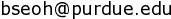
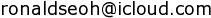

I’m a PhD student in the Department of Computer Science at Purdue University, advised by Professor Dan Goldwasser. I’m broadly interested in natural language processing and information retrieval.
My long-term research goal is to develop NLP methods that would enable systems for facilitating more engaged exchanges and comprehensive presentations of opinions over the Internet: I believe that such systems could assist us in building more equitable societies by encouraging deliberative conversations across diverse social groups. Moreover, they would provide various stakeholders with more accurate snapshots of relevant opinion landscapes, leading to more sound understanding and better decision-making.
On this front, my current research focuses on automatic methods for analyzing multimodal content – such as commercial advertisements or social media posts with memes. As increasing amount of communication on the Internet now takes the form of either images or text with images, properly processing them would be critical in understanding their dynamics, such as their message, target audience, rhetorical devices, and more.
With the recent advances in large vision-language models (LVLMs), it has now become possible to leverage LLMs’ knowledge and reasoning capabilities to perform reasoning over image inputs using language rather than relying solely on vision representation. However, because such visual inputs are not textual language, there are multiple ways to contextualize one image — i.e., it could be described in many different ways, in terms of detail / nuance / subjectivity. To address this issue, I’m currently working on methods for inducing appropriate contextualization of images on LVLMs to allow them to correctly capture the intended message of multimodal content.
Before Purdue, I received an MS in Computer Science from the Manning College of Information and Computer Sciences at the University of Massachusetts Amherst. During my time at UMass, I worked as a researcher in Professor Andrew McCallum’s Information Extraction and Synthesis Laboratory (IESL).
A while back, I completed an MSc in Operational Research from The London School of Economics and Political Science, where my dissertation advisor was Professor László A. Végh. I graduated with a BA in Computer Science and Business from Brandeis University.
MagiC: Evaluating Multimodal Cognition Toward Grounded Visual Reasoning. accepted to AACL 2026 main conference. paper.
EmoGist: Efficient In-Context Learning for Visual Emotion Understanding. accepted to EMNLP 2025 findings. paper.
Encoding Multi-Domain Scientific Papers by Ensembling Multiple CLS Tokens. arXiv preprint. paper, code.
Open Aspect Target Sentiment Classification with Natural Language Prompts. accepted to EMNLP 2021 main conference. paper, slides, poster, code.
Emails:
 